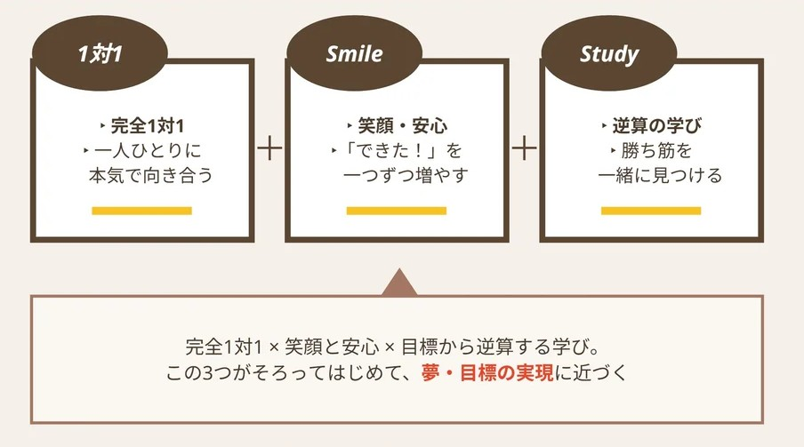

CURRICULUM
なぜ、スマイルスタディは完全１対１にこだわるのか。
今の成績だけで、お子様の可能性は決まりません。どこでつまずいているのか。どんな声かけなら前を向けるのか。どんな環境なら集中できるのか。そこまで見ていくために、スマイルスタディは完全１対１にこだわっています。

01 ／ PHILOSOPHY
私たちは、子供たちの夢や目標を叶える応援がしたい。
講師全員がこの想いを共有し、たとえ入塾前の成績がどんな成績であっても、どこまでも可能性を信じて応援します。今の成績だけで、お子様の可能性を決めつけることはありません。
楽しく前向きに学べる教室をつくる。
02 ／ VALUE OF ONE TO ONE
完全１対１の価値。
講師1人に生徒様1人。だからこそ、見えるものがあります。
１対２や１対３の個別指導では、講師が別の生徒様を見ている時間がどうしても生まれます。その間、お子様は分からないところを抱えたまま、手を止めて待つことになります。完全１対１なら、分からない瞬間にすぐ気づき、その場で立ち止まって一緒に考えることができます。授業時間のすべてを、目の前のお子様のためだけに使えること。それが、スマイルスタディが完全１対１にこだわる理由です。
講師1人に生徒様1人
他の生徒様への対応に時間を取られることが一切ありません。質問したいタイミングを待つ必要もなく、「今、ここが分からない」をその場で解決できます。
授業時間のすべてを、その生徒様のために
限られた時間を分け合うのではなく、1コマ80分をまるごとお子様のために使います。解説・演習・確認の配分も、その日の理解度に合わせて組み立てます。
わずかなつまずきを見逃さない
表情、手の止まり方、思考の癖まで見ながら、その場で軌道修正します。答えが合っていても解き方に不安が残っていれば、そこで立ち止まって一緒に確認します。
FULL-ORDER CURRICULUM
学習も、お子様に合わせたフルオーダー。
同じ学年・同じ教科でも、必要な学習は一人ひとり違います。スマイルスタディでは、決まったカリキュラムにお子様を合わせるのではなく、次の5つの要素をもとに、お子様専用の学習を設計します。
SUBJECT-DEDICATED SYSTEM
同じ講師が、継続して担当する教科担当制。
毎回違う講師ではなく、同じ講師が継続して担当します。学習状況、性格、つまずき方を把握しやすく、信頼関係を積み上げながら指導できます。前回どこでつまずいたのか、どんな声かけで前を向けたのか。積み重ねた理解があるからこそ、授業のたびにゼロから始める必要がありません。
03 ／ COURSES
一人ひとりの今と未来に合わせた、3つのコース。
スマイルスタディでは、全員に同じ教材を渡し、同じ順番で授業を進めることはありません。学年・学校・進路・生活状況によって大きく異なる「学習の目的」を整理するために、コースと講座を分けています。
同じ中学2年生でも、
- 学校の授業についていくことが目標の生徒様
- 前学年の内容から学び直したい生徒様
- 定期テストで80点・90点を目指す生徒様
- 中高一貫校の速い授業進度に対応したい生徒様
では、必要な授業が異なります。
高校生も同様です。学校の評定を上げたいのか、英検を取得したいのか、一般選抜を目指すのか、総合型選抜や学校推薦型選抜を考えているのかによって、優先すべき科目や教材は変わります。
ただし、講座を分けることは、生徒様を一つの型に当てはめることではありません。講座ごとに大きな目的と考え方を設定したうえで、実際の授業では、
- 現在の学力
- 直近のテスト結果
- 学校の授業進度
- 志望校や進路
- 得意科目・苦手科目
- 部活動や生活リズム
- ご本人の性格や質問のしやすさ
- 保護者様からのご要望
を確認し、その生徒様に必要な内容へ絞り込んでいきます。
講座によって、ゴールと優先順位は分ける。
しかし、実際の授業内容は一人ひとりに合わせて変える。
授業を増やす前に、何を優先すれば成果につながるのかを考える。それが、１対１スマイルスタディの講座設計です。
高校・大学受験コース
学年に合わせて、3つの段階で進め方を変えます。
04 ／ LESSON DESIGN
すべての講座に共通する、授業づくり。
講座は分かれていますが、授業づくりの考え方は共通しています。「分かった」で終わらせず、「自分でできた」まで進めるのが、完全１対１授業の基本です。
-
01
面談内容を授業へつなげる
面談で話しただけで終わらせず、決まった教材・目標・優先事項を担当講師へ共有します。学校の教科書を使う、特定のプリントを毎回持参する、英検の過去問を実施する、定期テスト前は学校ワークを優先するなど、保護者様・生徒様と確認した内容が実際の授業に反映されているかも確認しています。
-
02
毎回「なぜこの授業をするのか」を明確にする
担当講師は授業前に、生徒様・科目と単元・使用教材・その内容を扱う理由を共有します。授業内容を教室全体で確認することで、担当講師だけに責任を任せず、授業品質を安定させています。
-
03
正解・不正解ではなく、原因を見る
同じ間違いでも原因は異なります。知識不足なのか、読み違いなのか、計算ミスなのか、根拠が曖昧なのかによって、次に行うべき指導を変えます。
-
04
授業前後の変化をつくる
授業の最初にできなかった問題を、解説後に類題で解ける状態にします。「先生の説明を聞いたから分かった」ではなく、「自分で解けた」「自分で説明できた」まで確認します。
-
05
授業後も学習をつなげる
授業の最後には、次回までの課題を明確にします。間違えた問題は、解説を聞いただけで終わらせず、解き直しまたは類題まで取り組みます。授業後は、できるようになったことと次の課題を保護者様にも共有し、必要に応じて次回面談や授業計画の見直しへつなげます。
SYSTEM FOR QUALITY
仕組みが、教育品質をつくります。
指導報告書、面談の記録、講師どうしの情報共有、講師の研修まで。スマイルスタディの教育品質を支える仕組みは、こちらでご紹介しています。
IN CLOSING
目的が違うから、講座を分けています。
１対１スマイルスタディが提供しているのは、学年別に決められた教材を進めるだけの授業ではありません。
- 中学1・2年生には将来の受験につながる基礎と学習習慣を。
- 高校1・2年生には評定を守りながら大学受験の選択肢を広げる準備を。
- 中学3年生には内申点・北辰テスト・志望校から逆算した高校受験対策を。
- 高校3年生には入試方式・科目配点・試験日から逆算した大学受験戦略を。
- 中高一貫校生には在籍校独自の教材と進度に合わせた学校別指導を。
- 不登校や登校に不安のある生徒様には現在の状況を尊重した学び直しと進路支援を。
そして、同じ講座の中でも、必要な授業は一人ひとり違います。目標、現在地、性格、学校生活、部活動、テスト結果まで確認したうえで、今やるべき学習を見極める。完全１対１だからこそできる授業で、「分からない」を「自分でできた」に変えていきます。
OUR CURRICULUM
カリキュラムの詳しい内容は、体験授業でご説明します。
お子様の現在地を伺いながら、実際にどのような学習設計になるかを、体験授業を通してご案内します。
今の成績だけで、可能性は決まりません。夢や目標に向かう一歩を、講師全員で応援します。